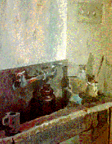

|


Steve Lehman
Elevating Arthur C. Clarke to the status of "contemporary secular Elijah",
Lehman examines the impact Clarke has had on our culture in his essay:
Divining Arthur C. Clarke
Anthony N. Chandler
Focusing on Anne Rice's Interview with the Vampire, Chandler explores
Rice's ultimate definition of self - "the justification of his existance to
another in a confessional interview":
Oral Defence: Self-definition In Anne Rice's
Interview With the Vampire.
|